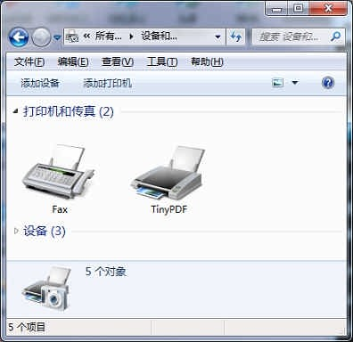
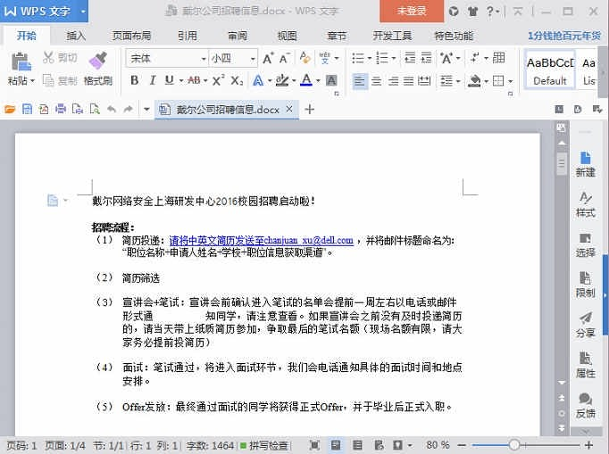
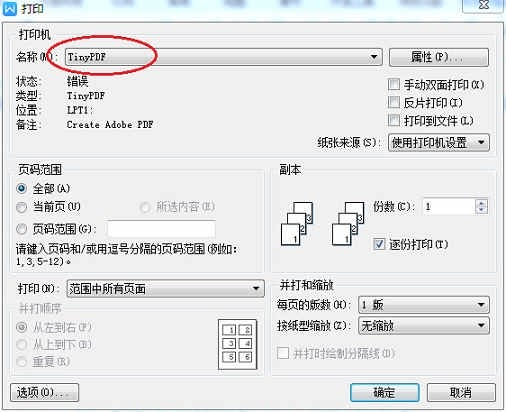
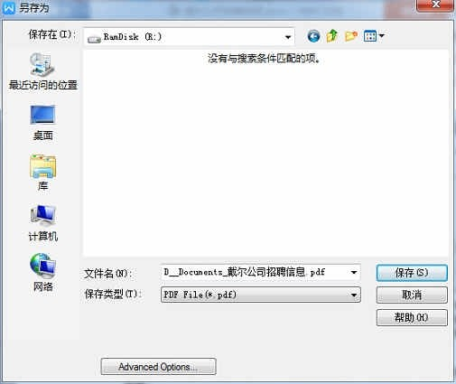
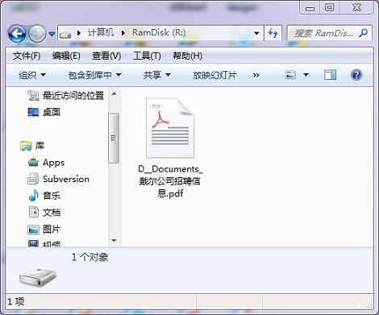

今天遇到要把知网上下载下来的CAJ文件转换成PDF的需求，找了一大圈，都不好用，最终安装了一个叫做TinyPDF的软件，成功解决。
TinyPDF的原理是虚拟一个打印机，发送给该虚拟打印机的打印指令，都会输出到一个pdf文件中。于是，任何支持打印功能的文件格式都可以通过这个虚拟打印机转换成PDF。
下载安装InstallTinyPDF.exe，按照指引安装，安装完之后，在控制面板 => 所有控制面板项 => 设备和打印机里面就可以看见TinyPDF了：

随便打开一个软件，比如WPS Word，打开一个文件：

点击打印，打印机选择TinyPDF：

当点击确定之后，TinyPDF就会弹出一个对话框，询问pdf文件保存的位置：

片刻之后，文件转换完成：
